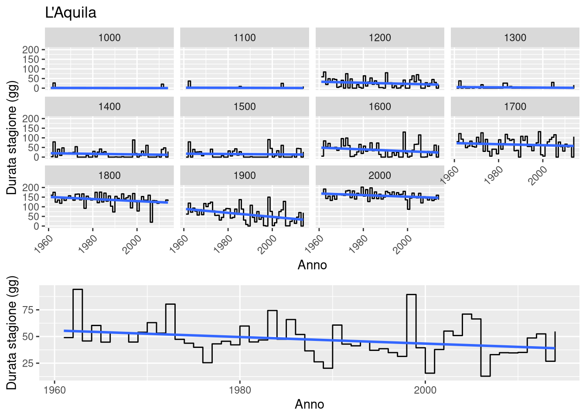

Papero sul turismo
Materials
Analyses were conducted using the data made available by the Copernicus project (see European Union’s space programme), whose dataset is made up of 39 indicators relating to atmospheric and snow conditions of NUTS-3 regions (Nomenclature of Territorial Units for Statistics) on European territory.
The data have a vertical resolution of 100m and the snow cover indicators available from the project were calculated using the Crocus snowpack model, a multi-layer snowpack model embedded in the land surface model, SURFEX (Surface Externalisée).
To estimate the impact caused by climate change, the model was applied to four different scenarios in terms of emissions produced:
- the current climate
- optimal (emissions decrease starting from 2020)
- optimistic (emissions will decrease starting from 2040)
- pessimistic (emissions continue to grow throughout the century)
The Crocus model (https://www.umr-cnrm.fr/spip.php?article265&lang=en) allows both slope preparation and artificial snow production to be taken into account, adding further value for the end user by providing guidance on snow management requirements in future climate conditions. However, it is not designed to replace the higher resolution products available in some European regions that provide a more detailed view of ski conditions; for example, taking into account slope, local weather phenomena and local snow management practices.
This dataset instead presents a homogeneous product at a pan-European level and therefore its main objective is to compare the main characteristics of past and future snow conditions across Europe or to compare distant destinations; for example, Scandinavia and Eastern Europe (for a given elevation and time horizon).
In addition to the scenarios, a dataset was produced through the UERRA reanalysis model (UERRA: Uncertainties in Ensembles of Regional Reanalyses; https://www.uerra.eu).
Methods
Data are available in NetCDF-4 and the indicators taken into account for this paper are related to start and end of the ski season from which the duration of snow season was derived for all regions overall Italy.
According to data description for the indicators involved the “duration of the season” in this study is then defined as the longest continuous period from August 1st of year N-1 to July 31st of year N where the snow depth is continuously \(\geq 30cm\) using a natural snow simulation.
The first date, within this continuous period, meeting the condition “Snow depth >= 30cm” is the beginning of the season. The last date within this continuous period, meeting this condition, is the end of the season. In case only one date meets the condition, then beginning of season and end of season are attributed this value. In case no date meets the condition (i.e., Snow depth is lower than 30 cm for the entire year), no date is attributed (value of 0). The value assigned is interpreted as the number of days after August 1st of year N-1.
This study aims at investigating yearly and five period trends, for the latter the mean duration has been calculated.
Generalized Additive Models approach
GAMs (Wood, 2017) have been implemented to assess how duration of the season with snow depth \(\geq 30cm\) varied in relation to predictor variables, ie. \(Year\) and \(Altitude\).
The GAMs are useful for identifying linear and non-linear relationships in the data and do not require a priori knowledge of the shape of the response curves. GAM is a sum of smoothed functions of the predictor variables commonly defined as polynomials based on intervals, known as splines.
As we see for Biella region duration, data at various altitudes show a non linear relationship which makes it difficult to estimate a clear trend for the overall period though it seems to be a decline in the lines.

Fitting a simple GAM model for each altitude (group) makes this relationship evident graphically.

Theory
So in general, the structure of a GAM according to Wood could be estimated by Equation (1):
\[ y = \beta_0 + f(x_1) + f(x_2) + ... f(x_n) + \varepsilon \quad (1) \] where \(\quad \varepsilon \sim N(0, \sigma^2)\)
\(y\) is a response variable and \(f\) is a smoothing function.
In GAM it is possibile to have combinations of linear and smooth terms, eg. \[ y = \beta_0 + x_1\beta_1 + f(x_2) + \varepsilon \quad (2) \]
Smooth term
A smooth term is the sum of some number of functions, eg.
\[ f(x) = \sum_{j=1}^kF_j(x)\beta_j \] Above, each \(F_j\) is a basis function that is the transformed \(x\) depending on the type of basis considered, and the \(\beta\) are the corresponding regression coefficients.
As an example, for the polynomial basis we would have: \[f(x) = b_0 + b_1\cdot x^1 \ldots +b_d\cdot x^d\] Here yearly and five period trends analysis have been carried out by the mean of Generalized Additive Models (GAMs) for duration of season trend estimates for overall and at 100m altitude resolution.
In this study the basic formulation follows:
\[ Length\ of\ season = \beta_0 + f_1(Year)+ \beta(Altitude) + \epsilon \] where \(\beta\) represents the linear component, \(\beta_0\) intercept and \(f_1\) the smoothing component of the model.
Smooth covariates functions here are temporal trends, eg. “Year” or “Five year period”, while “Altitude” represents a factor for capturing trend changes other than overall.
Hence the models for “Five year period” and “Year” trends could be written respectively:
\[ Length\ of\ season = \beta_0 + f(Five\ year\ period) + \beta_1*Altitude \] \[ Length\ of\ season = \beta_0 + f(Year) + \beta_1*Altitude \]
Hence GAM formulas could be written respectively:
\(duration \sim s(fiveyears) + altitude\)
\(duration \sim s(year, k = 6) + altitude\)
In the smoothing term (spline) for the year and fiveyears covariates a \(k = 6\) hase been choosen in order to reduce wiggliness and then simplify interpretation.
p.table
| (1) | |
|---|---|
| (Intercept) | 47.870 [39.451, 56.289] (<0.001 ***) |
| quota1100 | 26.833 [14.927, 38.740] (<0.001 ***) |
| quota1200 | 32.093 [20.186, 43.999] (<0.001 ***) |
| quota1300 | 56.500 [44.594, 68.406] (<0.001 ***) |
| quota1400 | 61.222 [49.316, 73.128] (<0.001 ***) |
| quota1500 | 70.870 [58.964, 82.777] (<0.001 ***) |
| quota1600 | 78.481 [66.575, 90.388] (<0.001 ***) |
| quota1700 | 71.630 [59.723, 83.536] (<0.001 ***) |
| quota1800 | 103.574 [91.668, 115.480] (<0.001 ***) |
| quota1900 | 103.574 [91.668, 115.480] (<0.001 ***) |
| quota2000 | 109.222 [97.316, 121.128] (<0.001 ***) |
| quota2100 | 109.222 [97.316, 121.128] (<0.001 ***) |
| quota2200 | 129.944 [118.038, 141.851] (<0.001 ***) |
s.table
| s(anno) | (<0.001 ***) |
\[R^2 = 0.66 \]
The \(p.table\) provides information on the linear effects while \(s.table\) provides information on the smooth (non-linear) effects the estimated trend for Biella region.
Lenght of season varies non-linearly across the years while a general monotonic descending trend can be seen (figure 1). There’s a peak with declining levels between years 1980-1990 and smaller ascending peak between years 1990-2000 then again a decline towards 2014.
there is also a pronounced trend difference in duration between the altitudes. altitude contribution levels rises with three main steps (figure 2)
- 1100-1200
- 1300-1700
- 1800-2200

Figure 1 - Smooth term

Figure 2. Parametric term
La riduzione della durata media della stagione presenta una riduzione significativa a tutte le quote (risoluzione verticale a 100mt) e per tutti i periodi di cinque anni. Apprezzabile la stima della riduzione a quota 2200mt (~20gg), 1300mt (~25gg) e 1800mt (32gg).
Mann-Kendall
Per tutte le provincie è stato poi calcolato il test non parametrico di Mann-Kendall, il cui scopo è di valutare statisticamente se esiste un trend monotono crescente o decrescente della variabile di interesse nel tempo.
Un trend crescente (o decrescente) significa che la variabile aumenta (diminuisce) costantemente nel tempo, mentre la tendenza può o meno essere lineare.
The Mann-Kendall test is used to determine whether or not there is a linear monotonic trend in a given time series data.The null hypothesis, \(H_0\), states that there is no monotonic trend and this is tested against one of three possible alternative hypotheses, \(H_a\):
- there is an upward monotonic trend
- there is a downward monotonic trend
- there is either an upward monotonic trend or a downward monotonic trend.
It is a robust test for trend detection used widely in climatological, hydrological and environmental time series analysis (eg. air quality).
The Mann-Kendall test does not assume the data to be distributed according to any particular rule (so it does not require that the data be normally distributed) and it is not effected by missing data (although it might effect the statistical significance adversely); it is not effected by irregular spacing of the time points of measurement and by the length of the time series.
In this study we deal with non seasonal time series (TODO mostrare un esempio?) 55 years long which garantees effectiveness of Mann-Kendall test.
\[\begin{split}sgn(x_i - x_j) &= \begin{cases} 1, & x_i - x_j > 0\\ 0, & x_i - x_j = 0\\ -1, & x_i - x_j < 0 \end{cases}, \end{split}\]now we have and indicator which tell what happens about differences between time i and j ie. if positive, negative or zero.
Next we should compute mean and variance of the above. The mean which is the Mann-Kendall test statistic is given by:
\[ E[S] = \sum_{i=1}^{n-1} \sum_{j=i+1}^{n} sgn(x_i - x_j), \] and the variance is given by:
\[ \sigma^2 = \frac{1}{18} \Big( n(n-1)(2n+5) - \sum_{k=1}^p q_k(q_k-1)(2q_k+5) \Big), \] where \(p\) is the total number of tie groups in the data, and \(q_k\) is the number of data points contained in the \(k-th\) tie group.
For example, if the time series measurements were \({12, 56, 23, 12, 67, 45, 56, 56, 10}\), we would have two tie groups for the measurements 12 and 56, i.e. \(p=2\), and the number of data points in these tie groups would \(q_1=2\) for the tie group with \({12}\), and \(q_2=3\) for the tie group with \({56}\).
Using the mean \(E[S]\) and the variance \(VAR(S)\) we compute the Mann-Kendall test statistic, using the following transformation, which ensures that for large sample sizes, the test statistic \(Z_{MK}\) is approximately normally distributed:
\[\begin{split}Z_{MK} &= \begin{cases} \frac{E[S] - 1} {\sqrt{VAR(S)}}, & E[S] > 0\\ 0, & E[S] = 0\\ \frac{E[S] + 1} {\sqrt{VAR(S)}}, & E[S] < 0\\ \end{cases} \end{split}\]Hypothesis testing
At a significance level \(\alpha\) of the test, which is also the Type I error rate, we compute whether or not to accept the alternative hypothesis \(H_a\) for each variant of \(H_a\) separately:
\(H_a\) : There exists an upward monotonic trend
- If \(Z_{MK} ≥ Z_{1−\alpha}\) then accept \(H_a\), where the notation \(Z_{1−\alpha}\) denotes the \(100(1−\alpha)\)-th percentile of the standard normal distribution.
\(H_a\) : There exists a downward monotonic trend
- If \(Z_{MK} ≤ -Z_{1−\alpha}\) then accept \(H_a\)
\(H_a\) : There exists either an upward or a downward monotonic trend
- If \(|Z_{MK}|≥Z_{1−\alpha/2}\) then accept \(H_a\), where the notation \(|⋅|\) is used to denote the absolute value function.
For the province of Biella in a five year period the Mann-Kendall test is significant at all altitudes at a 5% level :
Test su provincie di interesse NORD
| nuts_name | 1000 mt | 1200 mt | 1400 mt | 1600 mt | 1800 mt | 2000 mt | 2200 mt | 2400 mt | 2600 mt | 2800 mt | 3000 mt | 3200 mt |
|---|---|---|---|---|---|---|---|---|---|---|---|---|
| Sondrio | 0.0031 | 0.0051 | 0.0293 | 0.0051 | 0.0127 | 0.0509 | 0.0195 | 0.0430 | 0.0051 | 0.0031 | 0.0031 | NA |
| Brescia | 0.0107 | 0.0350 | 0.1611 | 0.1844 | 0.0127 | 0.0430 | 0.0081 | 0.0051 | 0.0031 | 0.0011 | NA | NA |
| Belluno | 0.0215 | 0.0100 | 0.3100 | 0.0617 | 0.0195 | 0.0127 | 0.0509 | NA | NA | NA | NA | NA |
| Biella | 0.0018 | 0.0051 | 0.0127 | 0.0081 | 0.0127 | 0.0430 | 0.0155 | NA | NA | NA | NA | NA |
| Torino | 0.0127 | 0.0430 | 0.0430 | 0.0195 | 0.0617 | 0.0430 | 0.1611 | 0.0195 | 0.0293 | 0.0127 | 0.0195 | NA |
| Vercelli | 0.0051 | 0.0051 | 0.0127 | 0.0127 | 0.0051 | 0.0081 | 0.0195 | 0.1195 | 0.0617 | 0.0868 | 0.0127 | 0.0081 |
| Cuneo | 0.0617 | 0.0350 | 0.1195 | 0.2758 | 0.0127 | 0.1611 | 0.2129 | 0.0195 | 0.0293 | NA | NA | NA |
| Valle d’Aosta/Vallée d’Aoste | 0.0081 | 0.0430 | 0.0081 | 0.0081 | 0.0127 | 0.0868 | 0.7555 | 0.0868 | 0.0100 | 0.0127 | 0.0430 | 0.0100 |
| Bolzano-Bozen | 0.0195 | 0.0293 | 0.0430 | 0.0430 | 0.0127 | 0.0100 | 0.0051 | 0.0018 | 0.0011 | 0.0031 | 0.0031 | NA |
| Trento | 0.0195 | 0.0081 | 0.0430 | 0.0127 | 0.0051 | 0.0127 | 0.0081 | 0.0051 | 0.0031 | 0.0031 | 0.0031 | NA |
biblio
Wood, S.N. Generalized Additive Models: An Introduction with R, 2nd ed.; Chapman & Hall/CRC: Boca Raton, FL, USA, 2017.